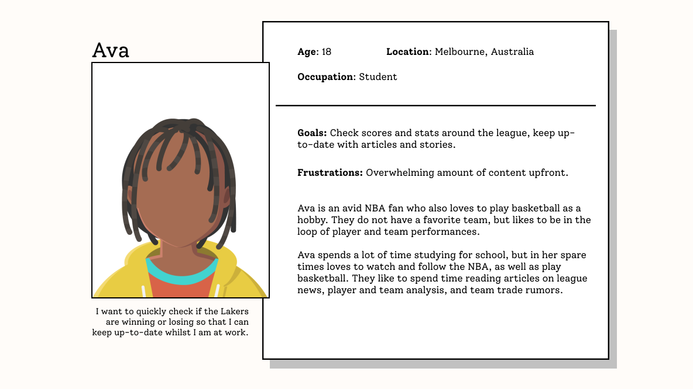
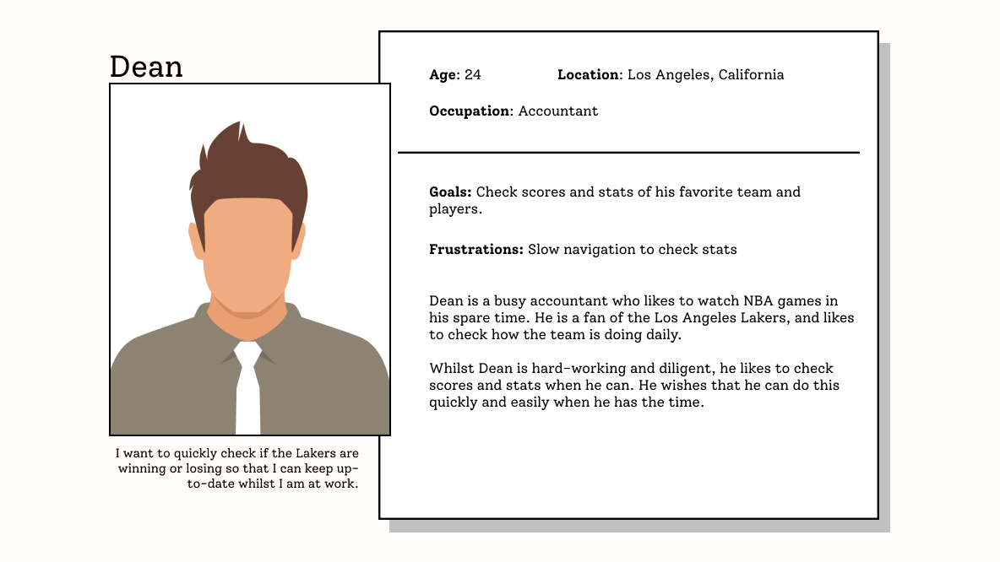
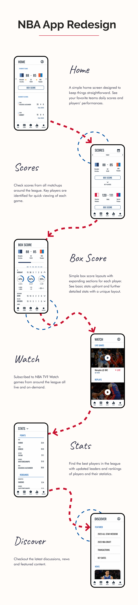

The NBA app is a product aimed at fans of the National Basketball Association.
Users can keep up-to-date with daily game scores, league standings, news and live games.
Furthermore, the app provides a personalized experience by allowing users to follow their favorite teams
and players.
Project
Self–Initiated
Timeline
January 2023
Deliverables
Mobile Application Concept
Problem
The NBA app has recently updated its user interface and visual appearance from its previous outdated
version. However, information architecture has not been updated and is inefficient and
confusing to use.
Goal
To create a more user-friendly app experience by redefining user goals and information architecture.
Pain Points
Through user research I identified user pain points that were common amongst participants. Users feel
the app is confusing with cluttered pages and unclear date/time elements. Furthermore, many features are
not fully incorporated as they open as webpages.
Personas


Problem Statement
Dean is a full-time accountant who likes to check NBA scores and statistics when he can so
he can keep up-to-date with his favorite team.
Solutions
Create an more personalised home page
Implement a 'Key Players' feature for quick stats
Redesign 'Discover' page for more visual variety
Wireframes
Style Guide
Outcome

Takeaways
This project was one I planned on working on for a while, as I am a regular user of the NBA app.
Here I was able to implement many ideas I had thought of, and test them with real users.
Understanding user paint points was natural as I shared some of them myself.
Design-wise I decided to take a minimal and modern approach, with less colour blocking and
separation, focusing more on simple light-dark appearances with accent colours. In addition I
experimented with shadows and border-radii to adapt modern design trends.